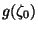

|
You are here : Control System Design - Index | Book Contents | Appendix C | Section C.8.3 C. Results From Analytic Function TheoryC.8.3 Poisson's integral for the unit diskTheorem 1.10 Let f(z) be analytic
inside the unit disk. Then, if
where P1,r(x) is the Poisson kernel defined by
Proof Consider the unit circle C. Then, using Theorem C8, we have
Define
Since z1 is outside the region encircled by C, the application of Theorem C.8 yields
Subtracting (C.8.21) from (C.8.19) and changing the variable of integration we obtain
from where the result follows.
Consider now a function g(z) which is analytic outside the unit disk. We can then define a function f(z) such that
Assume that one is interested in obtaining an expression for
,
where
where
If we finally make a change in the integration variable , the following result is obtained.
Thus, Poisson's integral for the unit disk can also be applied to functions of a complex variable which are analytic outside the unit circle. |